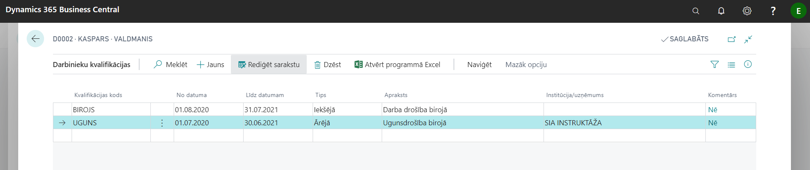
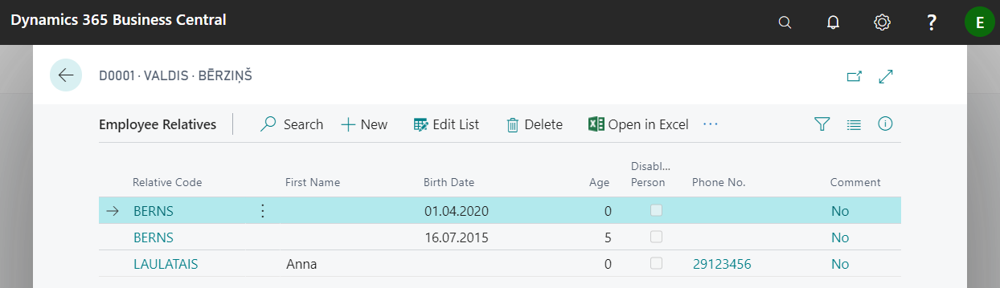
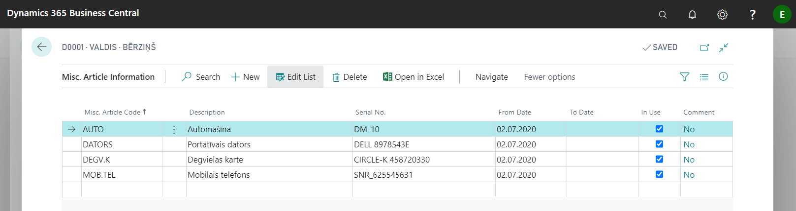
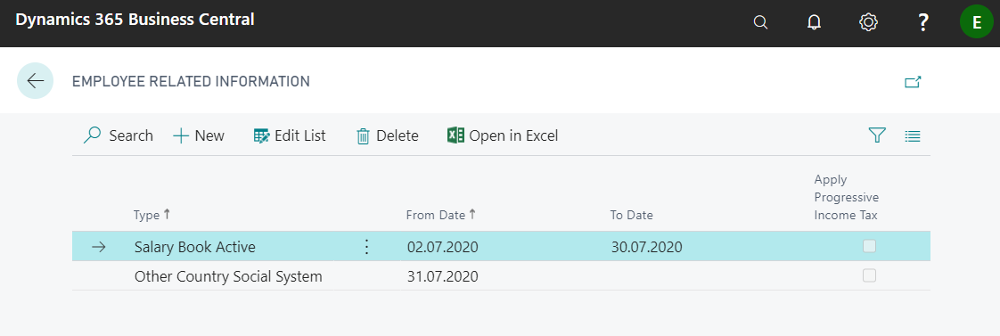
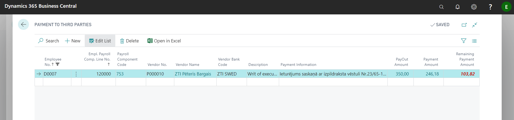
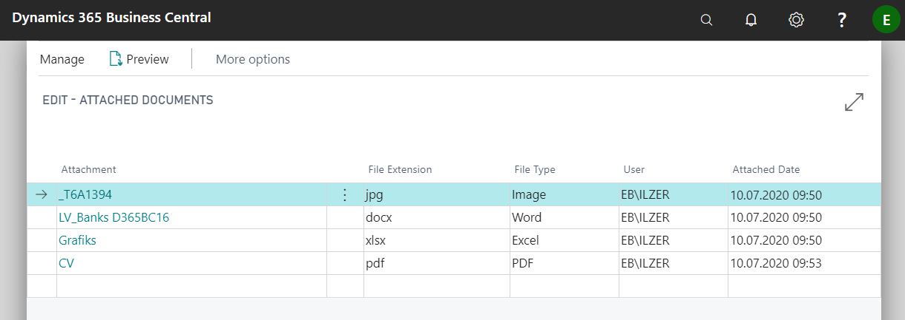
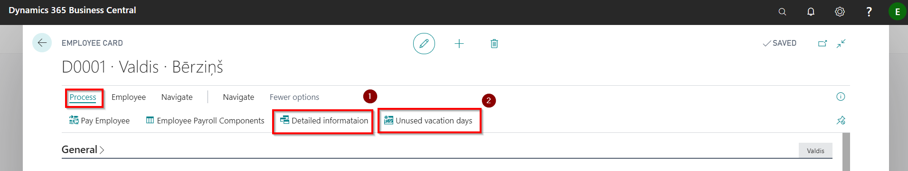

Additional employee information
You can enter various additional information related to a specific employee in the employee card:
- Qualifications
- Confidential information
- Alternate addresses
- Relatives
- Miscellaneous article information
- Status Codes
- Related information
- Payments to third parties
- Comments
- Attachments
- Employee picture
Qualification
A qualification list of employees can be maintained in the system. Based on this, it is possible to keep track of when trainings and briefings need to be repeated (for example, using a report Employee qualifications).
In order to start the registration of qualifications, it is necessary to register in the list Qualifications the codes of the types of qualifications and their descriptions, relevant to the company. Qualification codes are entered on each new line, indicating a code of your choice ( ) and a description of the relevant qualification (
) and a description of the relevant qualification ( ). If in field Qualified Employees (
). If in field Qualified Employees ( ) is a check mark Yes, then by clicking on the link you can view a list of which employees have this particular qualification.
) is a check mark Yes, then by clicking on the link you can view a list of which employees have this particular qualification.

Once the Qualifications list is complete, you can define employee qualifications by selecting Employee Cards in the toolbar Navigate - Employee - Qualifications.

| Field name | Description |
|---|---|
| Qualification Code | Code from the register Qualifications. |
| From date | Date of qualification. |
| To date | Qualification valid until. |
| Type | Select the origin: Internal, External, from a Previous Position. |
| Description | Description of the type of education, filled in from the qualification register. |
| Institution/Company | Name of the external qualification institution of origin. |
| Comment | A note that a comment has been added to the post. |
Confidential Information
Employee information classified as confidential can be stored in a separate list. Nowhere else in the system will this information be displayed. Each record of confidential information must define a code and provide a description of it. You can add a comment to each entry.
Confidential Information the list can be opened by clicking on the button Navigate in the employee card.
To be able to review data for multiple employees is available a report Employee Confidential Information, available by entering a name in the system search field.
Alternate Addresses
You can enter an unlimited number of alternate addresses for each employee. To do this, enter the code and the corresponding contact information in the list Alternate Addresses. Next, you can enter one of the Alternate Address codes in the field Alt. Address Code provided in the Employee Card tab Address & Contact.
Relatives
Each employee's card can contain data about relatives and their contact information in case of emergency. Children are given a date of birth, which makes it easy to check how many additional days of vacation are to be granted to the employee.

For the needs of the company, it is possible to collect data on employees' relatives using a report Employees Relatives, where data can be selected by various filter criteria (for example, by type of relative - children only).
Misc. Article Information
Each employee's card can list the inventory issued to the employee. First you need to define the codes of the issued inventory and their names in the list Employee Miscellaneous Articles. The inventory can then be assigned to the employee by recording a Serial Number for each item, determining the time of use, and adding a comment if necessary..

It is possible to use the report to control the issued inventory Employee Miscellaneous Article Information, available by entering a name in the system search field.
Status Codes
In the Employee's cards toolbar Navigate - Additional Info. For Payroll a function Status codes is available, where you can view and edit the social status codes associated with the employee, and on this basis the report Employee Social Sign Codes is prepared. If in Payroll Setup tab Reports is enabled function Status Code Enabled, then after the date fields are entered (what are related to status codes, for example date of recruitment, or date of termination, or unpaid leave), the system will prompt you to enter an employee status code in Status codes register.
Related information
In the Employee's cards toolbar Navigate - Additional Info. For Payroll a function Related information is available. Here you have to enter the fact of submission of the Salary Tax Book for each employee and indicate the date. Here should also be made a note and indicated the date for non-residents.
In addition, a feature is available for calculations Apply Progressive Income Tax.

Payment to third parties
If an order has been received to withhold an amount from an employee's salary and transfer it to another person's account (for example bailiff's account), the Payment to third parties functionality found on the employee card toolbar Navigate - Additional Info. For Payroll is provided for this case. The line must contain all the required information so that the system can prepare the payment for sending to the payment journal and later export to the bank. Before you can start this process, you will need to create a new vendor card for this third party (unless such a vendor card haven't been used and created before).

| Field name | Description |
|---|---|
| Employee No. | The system enters automatically. |
| Empl. Payroll Comp. Line No. | The relevant deduction component of the salary should been selected from the list. |
| Payroll Component Code | The system enters automatically. |
| Vendor No. | From the list, select the supplier to whom the amount should be transferred. |
| Vendor Name | The system enters automatically. |
| Vendor Bank Code | The supplier's bank account code is selected from the list. |
| Description | Freely chosen. |
| Payment Information | Text to be included in the payment order. |
| PayOut Amount | The system enters automatically. |
| Payment Amount | The system enters automatically. |
| Remaining Payment Amount | The system enters automatically. |
Attachments
If necessary, it is possible to attach files in the system in any format to the employee card (for example, CV, diplomas and other documents). The functionality is available in the Employee Card toolbar Employee.

Reports
The following reports can be easily accessed from the each employee card:
- Detailed information - information and links to all the calculations, payments and absence entries what are related to this particular employee.
- Unused vacation days - the current accrued vacation days appear on the work date in a pop-up window.
